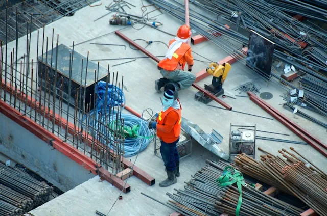

Look for avoidable waste
Review material usage, rework, and handling across the process. Tracking where waste occurs gives teams a concrete starting point for improvement.
Plan for consistency
Stable processes reduce the need to remake parts. Preventive maintenance and thoughtful scheduling can also support more predictable production.
Measure and refine
Choose a practical measure, record a baseline, and compare results after a change. Improvement is easier to assess when the team shares a clear definition of progress.
Let’s discuss your application
Every project has its own requirements. Share yours with our team to explore a suitable manufacturing approach.
Talk to our teamLook for practical improvements
Use these prompts to prepare a focused discussion with your engineering and production teams.
- Track where offcuts, rejected parts and repeat processing occur.
- Review nesting, batch sizes and material handling with the production team.
- Compare the results of one change before expanding it across the floor.